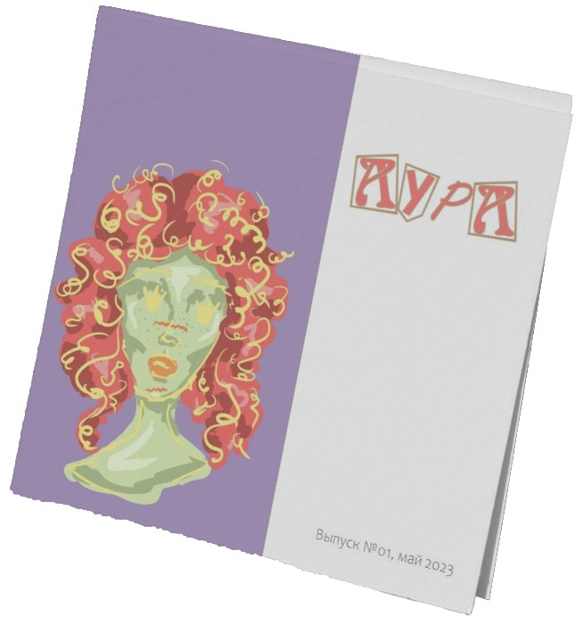
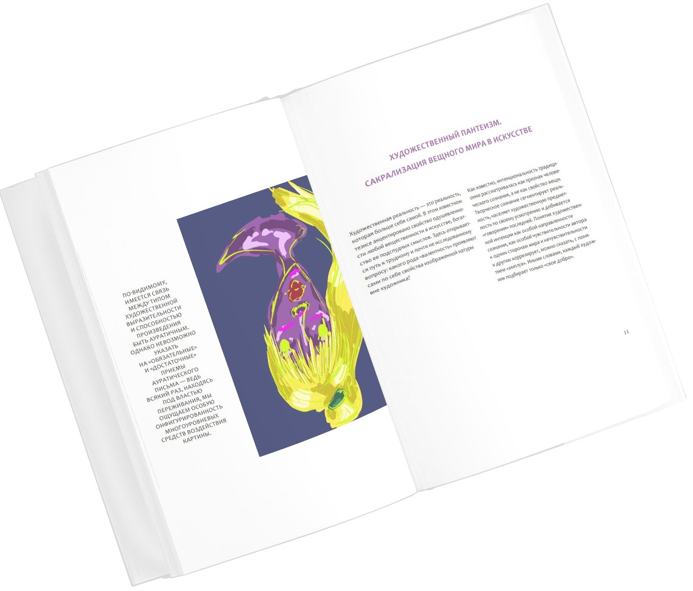

Проект журнала для издательства МКИК
Журнал «Аура» — это путешествие, которое раскрывает таинственный и загадочный мир энергетического поля, окружающего каждого из нас. Автор исследует сущность ауры, ее цвета, формы и значение, и объясняет, как аура отражает эмоциональное, физическое состояние, характер и ментальное состояние человека. Аура состоит из различных цветов и оттенков, каждый из которых несет определенную информацию о человеке. Журнал предлагает читателю глубокое погружение в мир энергетики, помогая раскрыть потенциал собственной ауры, использовав для этого иллюстрации.


- Глубокое понимание темы: автор подробно исследует ауру человека, раскрывая ее сущность, значение и влияние на нашу жизнь. Читатель получит полное представление об этом загадочном аспекте человеческой энергетики.
- Интригующий и понятный стиль изложения: автор представляет сложные концепции об ауре человека в доступной форме, что делает книгу увлекательной для широкой аудитории, независимо от уровня знаний в данной области.
- Вдохновение и просветление: на страницах книги читатели найдут мотивацию для самопознания, развития и духовного роста, что может привести к положительным изменениям в их жизни..